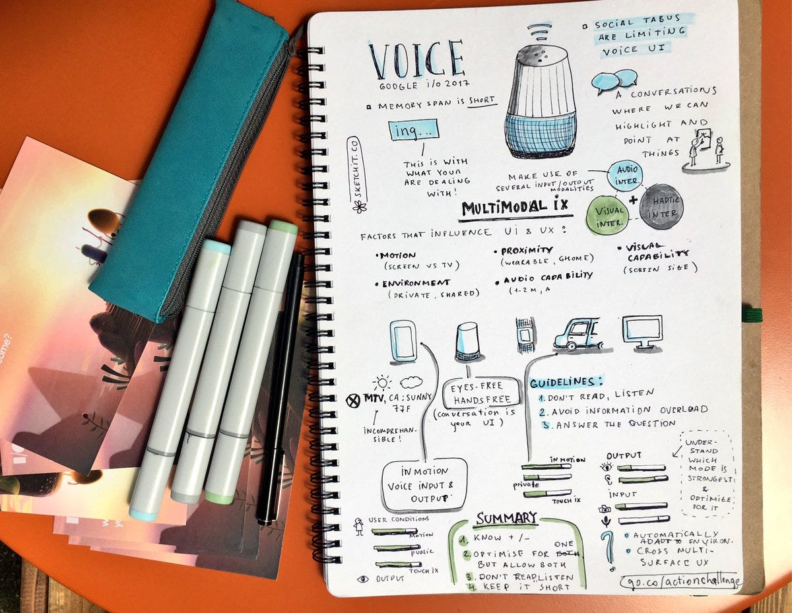
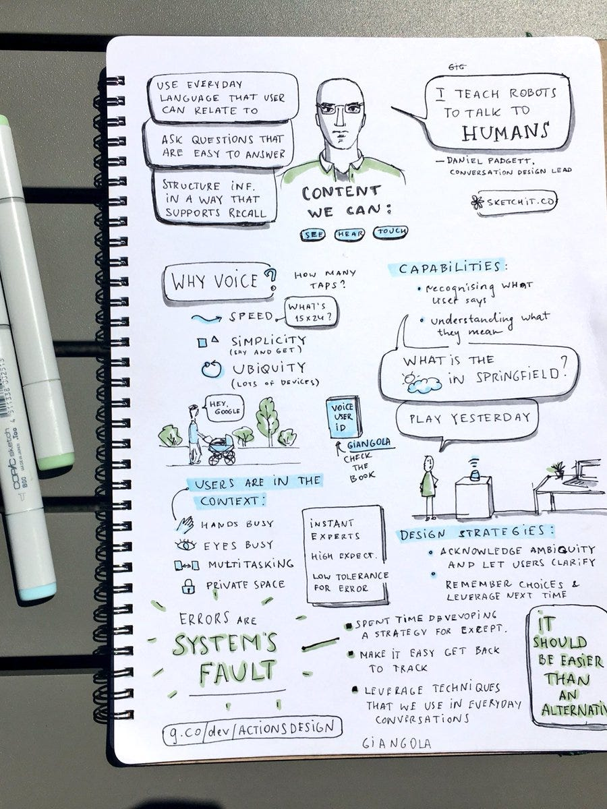
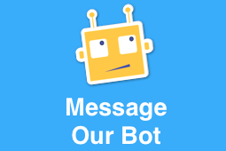
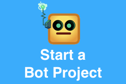

Beyond the verbal. Conversational UXs


Hi Edd
I partially agree with you when you say (I think ironically) that “Alexa is a great kitchen computer”. I seriously believe instead that Amazon is experimenting new prototypical devices (see Amazon Look and Amazon Echo Show) for an incoming “massive attack” in the area of market surprisingly “uncovered”:
Family, at Home
As you may know, Google is pretty in the same way; see news shared at #IO17 event just finished; please note Brad Adams literally stated:
Assistant is a conversational interface to Google
So I eventually agree with your statement: “The future isn’t voice, but integration”, with few clarifications: that “integration” is probably what Amazon call ambient computing (and Google call ubiquitous computing), and for me voice (the verbal paradigm) is just a glue of that integration. Now:
is not voice for the verbal, but is voice for conversational (intelligent&interconnected) user experiences.
Google even propose conversational UI as central&pervasive approach in all his new products (see what presented at #IO17).
So what does “conversational” mean?
Conversational is not just a voice interface commodity (in kitchen or in car or wherever you like at home or on the road), but is the ability of new appliances to “talk”, having intelligent conversations, both in man-machines interactions, and also among machines (here conversational imply also a possible chatbot-to-chatbot API open-standards).
So for me conversational UX (not just UI!) means an experience where a human dialog with a machine (a chatbot behind Amazon Echo/GooglHome, or an incoming TVbot behind Amazon Echo Show or Google Assistant for TV), exchanges intents and trans-actions in the cybernetics meaning.
Related articles:


Originally published on Medium.